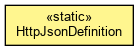

org.waarp.gateway.kernel
Class HttpJsonDefinition
java.lang.Object
 org.waarp.gateway.kernel.HttpJsonDefinition
org.waarp.gateway.kernel.HttpJsonDefinition
public class HttpJsonDefinition
- extends Object

- Author:
- frederic bregier
| Methods inherited from class java.lang.Object |
clone, equals, finalize, getClass, hashCode, notify, notifyAll, toString, wait, wait, wait |
HttpJsonDefinition
public HttpJsonDefinition()
loadHttpPage
protected static AbstractHttpField loadHttpPage(org.waarp.gateway.kernel.HttpJsonDefinition.ConfigHttpField fieldValue)
throws org.waarp.common.exception.InvalidArgumentException
- Throws:
org.waarp.common.exception.InvalidArgumentException
loadHttpConfiguration
protected static HttpPage loadHttpConfiguration(org.waarp.gateway.kernel.HttpJsonDefinition.ConfigHttpPage cpage)
throws org.waarp.common.exception.InvalidArgumentException,
ClassNotFoundException,
InstantiationException,
IllegalAccessException
- Throws:
org.waarp.common.exception.InvalidArgumentException
ClassNotFoundException
InstantiationException
IllegalAccessException
setConfigurationHttpServerFromJson
public static HttpPageHandler setConfigurationHttpServerFromJson(String filename)
throws org.waarp.common.exception.InvalidArgumentException,
ClassNotFoundException,
InstantiationException,
IllegalAccessException
- Initiate the configuration from the json file for Http server
- Parameters:
filename -
- Returns:
- the List if OK
- Throws:
org.waarp.common.exception.InvalidArgumentException
ClassNotFoundException
IllegalAccessException
InstantiationException
addToField
protected static void addToField(List<org.waarp.gateway.kernel.HttpJsonDefinition.ConfigHttpField> fields,
AbstractHttpField field)
addToElement
protected static void addToElement(List<org.waarp.gateway.kernel.HttpJsonDefinition.ConfigHttpPage> pages,
HttpPage page)
exportConfiguration
public static void exportConfiguration(HttpPageHandler httpPageHandler,
String filename)
throws HttpIncorrectRequestException
- Throws:
HttpIncorrectRequestException
Copyright © 2009-2013 Waarp. All Rights Reserved.